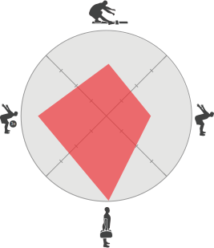

<!--
  Generated template for the M2pSub3Page page.

  See http://ionicframework.com/docs/components/#navigation for more info on
  Ionic pages and navigation.
-->
<ion-header color="dark">

  <ion-navbar color="dark">
    <ion-title>Movement Function Report</ion-title>
  </ion-navbar>

</ion-header>


<ion-content class="m2p">

  <ion-list no-lines [navPush]="pushPageM3pSub1">


    <ion-grid>

      <ion-row>
        <ion-col col-12>
          <p>This graph displays your results distribution of the 4  quadrants relating to performance.</p>
        </ion-col>
      </ion-row>
    </ion-grid>

    
    <button ion-button block full color="primary">More Info</button>
  </ion-list>


</ion-content>
